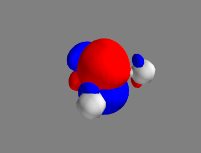

Configuration Interaction Singles
The configuration interaction singles (CIS) method applies a truncated CI wavefunction up to single excitations to a reference determinant, usually the Hartree-Fock determinant: The CIS matrix thus takes the form
Theoretical Background
We shall assume for simplicity that the reference determinant is the Hartree-Fock determinant. This makes our calculation easier because the Brillouin condition is satisfied and the reference determinant does not interact with singly excited determinants, i.e. . This makes our CIS matrix block diagonal. Since the first block is just the Hartree-Fock energy, we only have to calculate the second block: explicitly.
After some algebraical magic, we arrive at
It should be noted that the two-electron integrals are required in the MO basis, so we have to transform them from the AO basis: where is the -th AO coefficient of the -th MO.
For computational efficiency, this transformation is usually done in 4 steps, with one summation performed at each step. This reduces the computational complexity from for a direct transformation to .
Implementation
We can now implement the CIS method. Since we need several quantities from
the Hartree-Fock calculation, it is convenient to let the CIS class inherit
from the HartreeFock class.
import numpy as np
from hartree_fock import HartreeFock
HARTREE_TO_EV = 27.211_386_245_988
class CIS(HartreeFock):
def initialise(self):
super().initialise()
self.run_hf(max_iter=500, threshold=1e-8, verbose=0)
print(self.energy)
def get_cis_hamiltonian(self):
# Transform ERIs from AO basis to MO basis
eri_mo = np.einsum('pQRS, pP -> PQRS',
np.einsum('pqRS, qQ -> pQRS',
np.einsum('pqrS, rR -> pqRS',
np.einsum('pqrs, sS -> pqrS', self.mol.twoel,
self.mo_coeff, optimize=True),
self.mo_coeff, optimize=True),
self.mo_coeff, optimize=True),
self.mo_coeff, optimize=True)
# Transform to spin-orbital basis
norb = len(self.mo_energy) * 2
nocc = self.nocc * 2
nvirt = norb - nocc
eps = np.repeat(self.mo_energy, 2)
delta = np.zeros((2, 2, 2, 2))
delta[(0, 0, 0, 0)] = 1
delta[(0, 0, 1, 1)] = 1
delta[(1, 1, 0, 0)] = 1
delta[(1, 1, 1, 1)] = 1
eri_mo = np.kron(eri_mo, delta)
# Obtain orbital labels
self.orb_labels = []
for i in range(0, len(self.mo_energy)):
self.orb_labels.extend([f'{i}a', f'{i}b'])
# Obtain excitations in spin-orbit basis
self.excitations = []
for i in range(0, nocc):
for a in range(nocc, norb):
self.excitations.append((i, a))
# Build the Hamiltonian
hamiltonian = np.zeros((nocc * nvirt, nocc * nvirt))
for p, left_excitation in enumerate(self.excitations):
i, a = left_excitation
for q, right_excitation in enumerate(self.excitations):
j, b = right_excitation
hamiltonian[p, q] = (eps[a] - eps[i]) * (i == j) * (a == b) \
+ eri_mo[j, b, a, i] - eri_mo[j, i, a, b]
return hamiltonian
def run_cis(self, nprint=None):
h = self.get_cis_hamiltonian()
eigval, eigvect = np.linalg.eigh(h)
self.cis_energies = eigval
self.cis_states = eigvect
e_ev = eigval * HARTREE_TO_EV
# Print detailed information on significant excitations
print('CIS:')
if nprint is None:
nstate = len(self.excitations)
elif nprint < 0:
nstate = 0
else:
nstate = min(nprint, len(self.excitations))
for state in range(0, nstate):
print(f'Excited State {state + 1:3d}: '
f'E_exc = {e_ev[state]:10.4f} eV')
for idx, exc in enumerate(self.excitations):
coeff = eigvect[idx, state]
contribution = np.abs(coeff)**2
if contribution > 0.1:
i, a = exc
il, al = (self.orb_labels[x] for x in exc)
print(f'{il:4s} -> {al:4s} '
f'{coeff:12.6f} ({100.0 * contribution:.1f} %)')
print()
return eigval
The method get_cis_hamiltonian is the centerpiece of the CIS class. It
at first transforms the ERIs to the MO basis, spin-blocks them, and then
enumerates all singly excited determinants. The CIS Hamiltonian is then
constructed from the transformed ERIs and the MO energies.
The spin-blocking is useful since we can obtain excited states with all possible spin multiplicities. Although it is not necessary for CIS, since only singlets and triplets are obtainable from a singlet reference, it will become very useful when higher excitations are included.
Although spin-blocking will ease the implementation of higher excitations, it makes our algorithm less efficient. First of all, each dimension of the spin-blocked ERIs is twice as large as the original one, which makes it 16 times as big. Secondly, since states with different spin multiplicities are orthogonal in the absence of spin-orbit coupling, we only have to include some determinants (actually some carefully chosen linear combinations of determinants called configuration state functions) in the CI expansion. This will reduced the size of the CI matrix greatly when higher excitations are present.
The method run_cis takes the CIS Hamiltonian and diagonalizes it. The
eigenvalues are the excitation energies, and the eigenvectors are the
coefficients of the excited determinants in the CIS wavefunction. This method
also prints details about the lowest excited states.
Now we can test our implementation on the water molecule.
{{#shiftinclude -4:../codes/06-configuration_interaction/cis.py:cis_water}}
A section of the console output is shown below:
Excited State 1: E_exc = 11.0619 eV
4a -> 5a -0.707107 (50.0 %)
4b -> 5b 0.707107 (50.0 %)
Excited State 2: E_exc = 11.0619 eV
4a -> 5b -0.997462 (99.5 %)
Excited State 3: E_exc = 11.0619 eV
4b -> 5a 0.997462 (99.5 %)
Excited State 4: E_exc = 13.1605 eV
4a -> 5a -0.707107 (50.0 %)
4b -> 5b -0.707107 (50.0 %)
It can be seen that the first three excited states are degenerate, and their orbital contributions indicate that they are all triplet states with . The fourth state is a singlet state built from an equal mixture of 2 singly excited determinants.
We could again plot the density here for the excited states. Since the Slater determinants are orthogonal, the total (one-electron) density is just the sum of the densities of the individual determinants.
But with excited states, we can plot something more interesting: the transition density. Its definition is strongly motivated by the spin-free one-electron density: So we have two different wavefunctions in the integral, one for the initial state and one for the final state , instead of just one in the case of the density. This makes the transition density technically not a density since it is not positive definite.
For a transition density from the ground state to a singly excited state, we can simplify the expression to
Using the functions we have written in section 5.1.1, we can calculate and visualize the transition density of water:
XLIM, YLIM, ZLIM = (-5.0, 5.0), (-5.0, 5.0), (-5.0, 5.0)
NX, NY, NZ = 80, 80, 80
grid = build_grid(XLIM, YLIM, ZLIM, NX, NY, NZ)
mo_grid = evaluate_mo_grid(mol, grid, cis.mo_energy, cis.mo_coeff)
ISOSURFACE_COLORS = [(1, 0, 0), (0, 0, 1)]
DENSITY_ISOVALUES = [0.01, -0.01]
ISTATE = 3
td_grid = np.zeros((NX, NY, NZ))
for (exc, c_ia) in zip(cis.excitations, cis.cis_states[:, ISTATE]):
i, a = exc
if (i % 2) == (a % 2):
td_grid += c_ia * mo_grid[i] * mo_grid[a]
fig_td = mlab.figure()
visualize_cube(mol, grid, td_grid, DENSITY_ISOVALUES,
ISOSURFACE_COLORS, fig_td)
Since our orbitals have even indices and orbitals have odd indices, the if statement ensures that we only include orbital pairs with the same spin. The resulting figure is shown below.

Despite the word “density” in its name, the transition density is not a density in the usual sense, because it can be negative, as we can see from the blue isosurface.